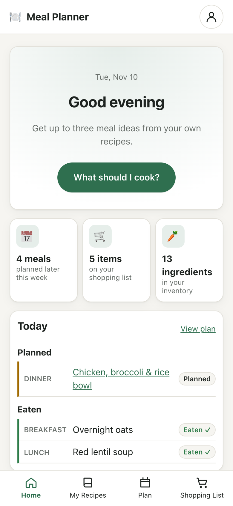

Choose your next meal from the food you actually cook.
A browser-based MVP that prioritizes your own recipes and considers available ingredients, cooking time, recent meals, and optional nutrition targets.
Status: Functional MVP described in the implementation documentation; user validation pending.
Built with: Vanilla JavaScript, localStorage, TheMealDB, and optional receipt OCR.
Project focus: Product discovery, UX iteration, and AI-assisted implementation.
The problem
Choosing lunch or dinner means balancing what sounds appealing with what is already at home, how much time cooking takes, and what has been eaten recently. Turning that choice into a shopping list adds another task.
Meal Planner explores whether starting with familiar recipes and making ingredient availability visible can reduce the effort of choosing a practical next meal.
Read the product case study → for the exploratory benchmark, scope decisions, iterations, and validation plan.
Preview


Start with today's context, then compare a small set of explained meal suggestions. Screenshots show the app with sample recipes.
What it does
- Start with your own recipes: Add and edit familiar meals. Six labeled sample recipes let you explore before building your library.
- Choose for a specific meal: Set servings, available time, date, and optional ingredients; receive up to three ranked personal recipes with explanations.
- Consider the rest of the day: Enable optional nutrition targets and distinguish food actually eaten from projected totals. Recent meal history informs variety.
- Connect planning and shopping: Schedule meals, review scaled ingredients, and create a shopping list linked to your plans.
- Keep inventory lightweight: Track availability, running-low and use-soon flags, and prepared leftovers without mandatory stock quantities.
- Reduce repetitive entry: Optionally import groceries from a reviewed receipt scan or explore up to two external recipe ideas.
Unknown stock is not treated as missing, and unknown nutrition is not treated as zero. Optional integrations supplement the core flow rather than block it.
Try the main flow
- Open What should I cook? and select a meal, servings, time, date, and ingredients.
- Compare suggestions and inspect their ingredient availability and explanations.
- Open a recipe and choose it for the meal; review ingredients before adding them to shopping.
- Mark purchases as bought and confirm consumption separately when the meal is eaten.
No account or body measurements are required. Dietary preferences can be configured independently of nutrition targets.
Run locally
Requirements: A modern browser and a local HTTP server. Python 3 is one option; the core app requires no package installation or build step.
From the project root:
python3 -m http.server 8766
Open http://localhost:8766. Serve files over HTTP rather than opening the HTML directly so JavaScript modules load correctly.
Optional discovery and external vision require an internet connection. On-device OCR initially downloads its runtime and language data. Open /tests/ on the local server to run the browser-based logic suite.
How it works
The recommender uses explicit filters and scoring rather than an AI service for its core decisions. It filters by meal type, time, required ingredients, and dietary restrictions, then ranks ingredient availability, nutritional fit, and recent variety. Use-soon priorities provide a limited bonus without overriding restrictions.
| Module group | Responsibility |
|---|---|
src/app.js |
Application state, hash routing, persistence, and interactions |
src/logic/ |
Recommendations, nutrition, ingredients, shopping, inventory, leftovers, and imports |
src/ui/ |
Page views and shared review panels |
tests/ |
Browser-run logic tests |
See technical notes for scoring weights, integration boundaries, and implementation details, and the nutrition specification for target-estimation logic.
Data and privacy
App records are stored in this browser's localStorage, with JSON export/import and deletion controls. There is no account, application backend, or cross-device synchronization. Clearing site data removes local records, so keep an export when needed.
Optional services have separate data flows: TheMealDB receives an ingredient name; external vision receives the receipt image. On-device OCR processes images locally after downloading its runtime. A shared deployment needs a server-side integration for secret API keys.
Showcase site
The project page and rendered docs are hosted by my portfolio site, so this repository can stay private. There is no public live demo, since that would publish the source code. site/build.py builds them from site/showcase.json; python3 site/build.py --publish copies a fresh build into the portfolio repo (../nazli-akmali.github.io/meal-recommender/), which is then committed and pushed. Needs pip install markdown==3.7.
Current limitations
- Nutrition completeness: No ingredient nutrition database is connected. Recipe values must be supplied, and incomplete totals are labeled. Estimates are not medical advice.
- Dietary checks: Ingredient-name rules cannot guarantee allergy safety or detect cross-contamination. Keto-style filtering is limited because carbohydrates are not tracked.
- Limited external discovery: TheMealDB searches one ingredient at a time; results lack cooking-time and nutrition data and are labeled unverified.
- Receipt scanning: On-device OCR currently supports English. Extraction requires review, and the external vision request was not verified live in the supplied implementation report.
- Lightweight stock tracking: Meals do not automatically deduct inventory. Only compatible units are merged; mass-to-volume conversions are not inferred.
The implementation documentation reports 67 logic tests and manual desktop/mobile flow checks. These were not independently rerun for this documentation revision. Time saved, recommendation usefulness, and sustained use have not yet been established through structured user research.
My contribution
I defined the personal problem, explored alternatives, and used my ETM trial to refine requirements around familiar recipes, ingredient visibility, and the next-meal decision. I prioritized features and guided iterations in optional personalization, navigation, and the connection between recipes, shopping, and inventory. AI assistants supported research synthesis, prototyping, implementation, and debugging.
The product case study documents these decisions, their tradeoffs, and what I would validate next.
Next steps
- Observe real meal-choice sessions and measure decision effort against the user's current method.
- Test recipe-entry effort and compare the guided wizard with a compact preferences form.
- Evaluate recommendation weights, ingredient corrections, and shopping-list reliability over repeated use.
Later technical opportunities include URL recipe import, sourced nutrition lookup, additional receipt languages, and cross-device sync.
Created by Seyedeh Nazli Akmali as a personal product management portfolio project, with AI-assisted implementation.